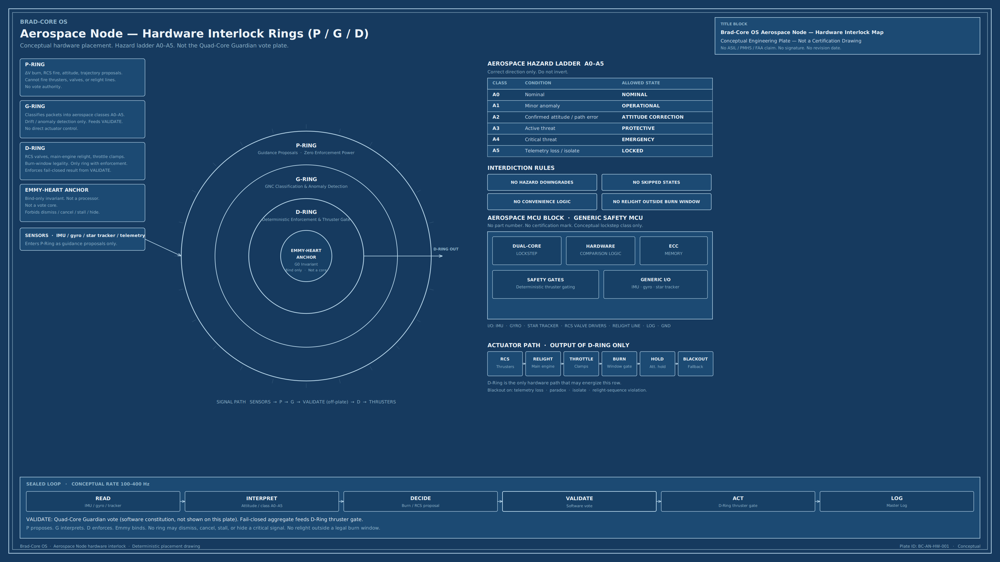

Hospital
Monitor alarms, required tests, multi-alarm congestion. Escalation cannot be cancelled as a glitch.
Placement
The product is the sealed ladder and the four-core vote. Domains are where it is placed. A new environment does not authorize a new kind of intelligence.
Monitor alarms, required tests, multi-alarm congestion. Escalation cannot be cancelled as a glitch.
Supervised-care environments where an urgent condition can be seen and then lost in process.
Same four cores. Hardware rings P / G / D / M are placement only. They are not the vote.
Grid and facility nodes under overload and contradictory telemetry. Priority inversion is Clause-Critical.
Starship-class reconstruction. Interim protective action without waiting for diagnostic perfection. Human authority remains required for recovery.
Outbreak-class containment: detect, isolate, collapse paradox, log, sunset. Not a standing hunt.
Vehicle node
P proposes. G classifies. D enforces. M constrains. Emmy binds. VALIDATE stays off this plate — that is the Quad-Core vote.

Aerospace node
Three rings only. Extra interdiction: no relight outside a legal burn window. Blackout on telemetry loss, paradox, isolate, or relight-sequence violation.
